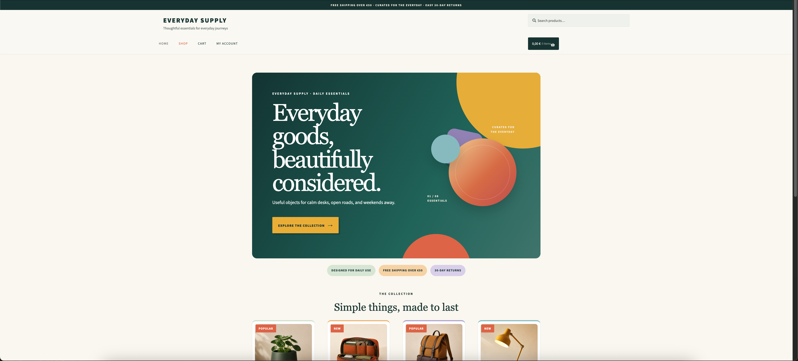
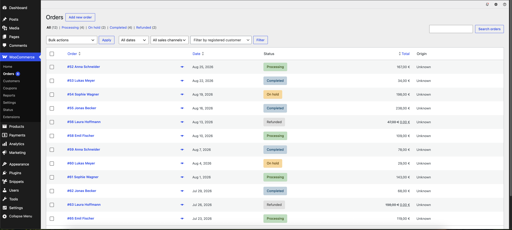
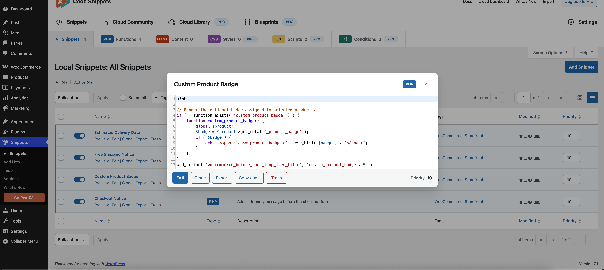
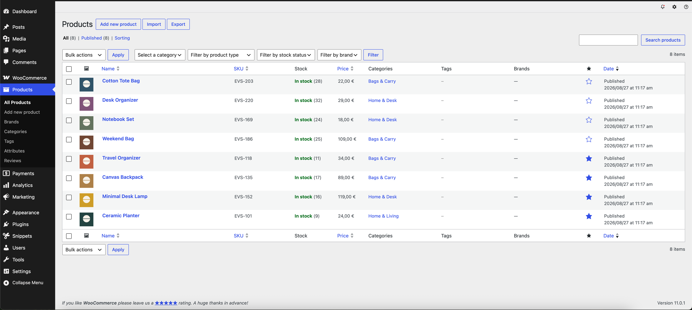

medien-his-he.de · WordPress / WooCommerce
E-commerce Support & Development
Ongoing technical support and development for a production WooCommerce store at klartxt GmbH — not the original design, but the developer keeping it stable, adjusted and extended as the business evolves.
My Role
Full support
This is an existing production storefront that I support and develop as part of my work at klartxt GmbH. My role focuses on the ongoing technical side of the shop — implementing frontend changes, adding custom functionality, fixing issues and handling new requirements as they come up. Since the store is already live, changes are made directly within an established system and need to integrate cleanly with what is already there.
I'm comfortable working across different CMS and e-commerce environments. This project runs on WordPress with WooCommerce, which offers a lot of flexibility but also comes with more responsibility around maintenance, plugins and updates. For projects where a more managed setup makes sense, platforms like Shopify, BigCommerce or Wix Studio can be a better fit. I'm not tied to one system — I adapt the implementation to the platform and the requirements of the project.
What I Do On This Project
Technical examples are reproduced in a separate demo environment to protect client and customer data.

Frontend Adjustments
Responsive frontend and UI refinements to existing storefront components — adjusting layouts, spacing and behaviour across desktop, tablet and mobile without rebuilding the theme from scratch.

Order & Checkout Workflows
Reviewing order status, payments and checkout-related edge cases inside WooCommerce — keeping the purchase flow reliable and easy to monitor as order volume grows.

Custom Functionality
Custom snippets and logic implemented for requirements that were not covered by the standard system — from checkout details to product-specific behaviour.

Ongoing Support
Handling technical requests, implementing changes and maintaining the storefront as requirements evolve — a continuous relationship rather than a one-off project.
Need help with a new website, storefront improvements, custom functionality or automation?